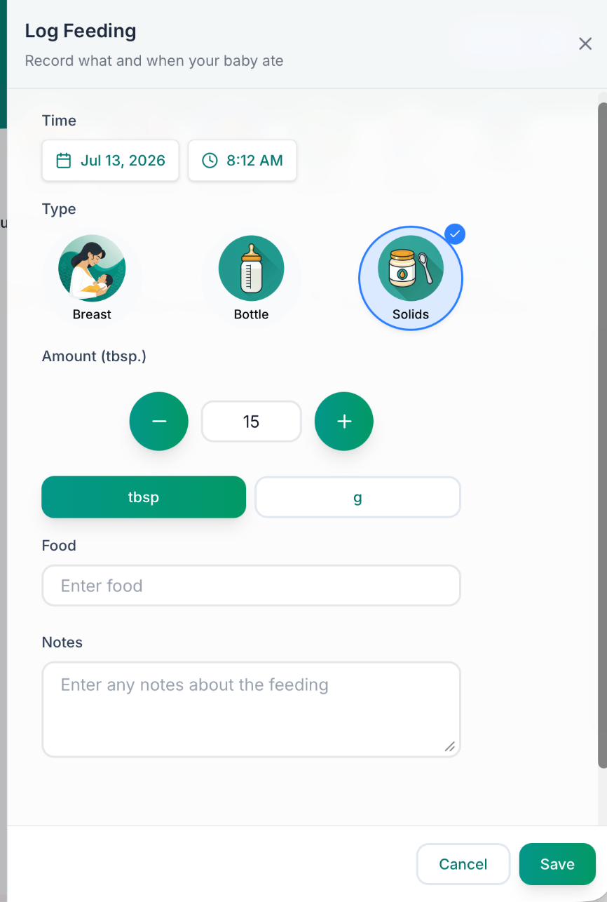
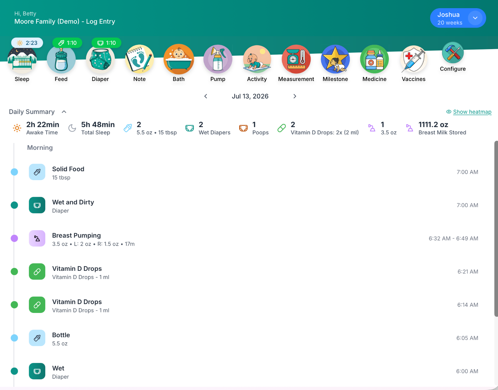
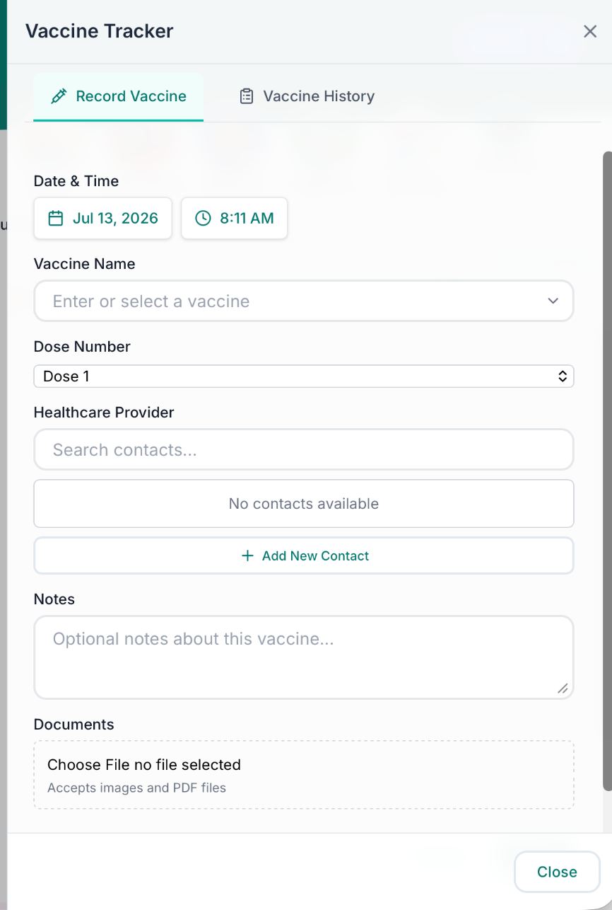
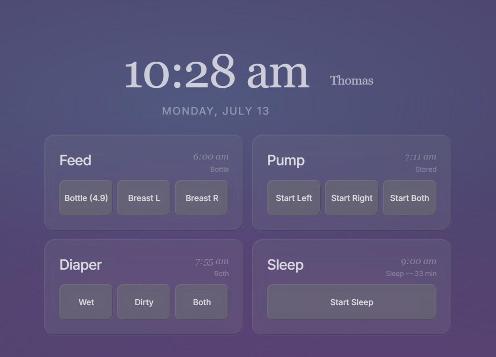

Sleep, feeds, diapers, medicine, milestones. Sprout Track is built for one hand, no sleep, and every caretaker in your baby’s life, from any phone or tablet.
14 days free, no card required. Then $2.99 a month, cancel anytime.
Tap Feed, Sleep, Diaper, or Pump on the mockup — that’s the entire logging flow. Amounts pre-fill from last time; a second tap saves. That’s why parents actually keep it up.
Every entry form leads with the common case: the usual bottle size, the last food, both-sides diaper. You confirm more than you type.

Grandma logs the noon diaper; you see it from work. Every entry shows who logged it, so nobody double-doses the vitamin D or re-asks about the last nap.

“How many wet diapers? How long is she sleeping?” The daily summary and reports answer the checkup questions from real data, not a bleary guess.

Mount a tablet by the crib and Sprout Track becomes a dimmed, always-on display. One tap logs the 2 am feed without waking the room, or your brain.

Every feature, unlimited caretakers, unlimited babies. Free for 14 days, and free forever if you self-host.
Set up in about two minutes. Invite the rest of the care team whenever you’re ready.
14 days free · no card required · cancel anytime